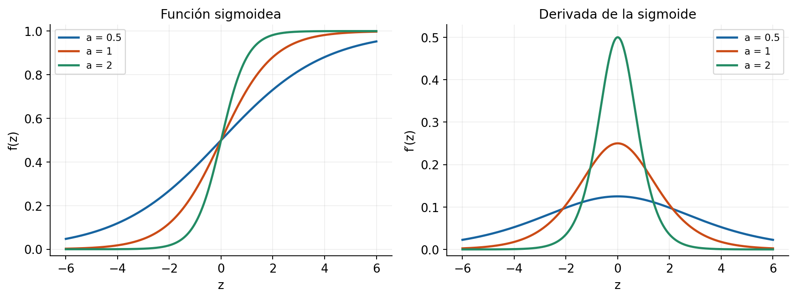

2. Derivada de la función sigmoidea#
2.1. Enunciado#
La sección 2.9. Cálculo de \(\delta^r_{nj}\) del material solicita verificar que, para la función sigmoidea logística,
Consideramos la sigmoide con parámetro constante \(a\),
La elección habitual \(a>0\) produce una función creciente. La identidad de la derivada también es válida si \(a=0\) o \(a<0\).
2.2. Demostración paso a paso#
2.2.1. Paso 1 Escribir el cociente como una potencia#
La función puede escribirse como
Esta forma permite aplicar la regla de la cadena: la función exterior eleva a la potencia \(-1\), y la interior es \(1+e^{-az}\).
2.2.2. Paso 2 Derivar la función exterior y la interior#
Por la regla de la cadena,
Como \(a\) es constante,
Al sustituir y simplificar los signos,
2.2.3. Paso 3 Expresar el resultado mediante la propia función#
De la definición de \(f\),
Por tanto,
Con esto queda demostrada la identidad (2.1).
2.3. Comprobación en un punto#
Si \(a=1\) y \(z=0\), entonces
La fórmula demostrada da
La expresión obtenida antes de factorizar produce el mismo resultado:
2.4. Relación con la retropropagación#
En una neurona con salida \(f(z)\), si una pérdida \(\mathcal L\) depende de \(z\) a través de esa salida, la regla de la cadena da
El gradiente que llega desde las operaciones posteriores se multiplica por la derivada local de la activación. Si \(f(z)\) ya se calculó en el paso hacia adelante, este factor se obtiene directamente a partir de ese valor.
El recorte original anuncia el cálculo de \(\delta^r_{nj}\), pero no incluye la definición de sus índices ni de esa cantidad. La demostración anterior establece el factor local solicitado; la regla general que lo incorpora se desarrolla en el capítulo de retropropagación.
2.5. Consecuencia sobre la magnitud de la derivada#
Como \(0<f(z)<1\) y
se obtiene
Para \(a>0\), la derivada alcanza \(a/4\) en \(z=0\) y tiende a cero cuando \(z\) tiende a cualquiera de los dos extremos infinitos. Así, una activación muy cercana a \(0\) o a \(1\) aporta un factor local pequeño al producto de derivadas de la retropropagación. Esta observación describe ese factor; la magnitud del gradiente completo también depende de los pesos y de las demás operaciones de la red.
2.6. Comprobación gráfica#


Figura 2.1 La sigmoide logística y su derivada para \(a=0.5\), \(a=1\) y \(a=2\). El código y las comprobaciones se encuentran en el cuaderno.#